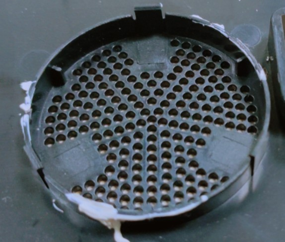
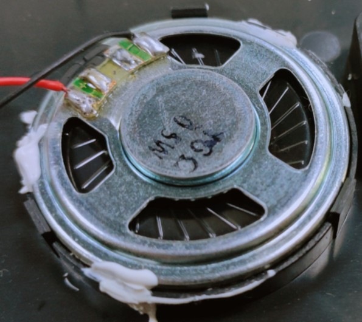

喇叭相关问题
觉得喇叭声音小怎么办
有2个解决方法
一是增加喇叭的功率，前提是你的电源要能够带得动，最大支持3W的喇叭，则必须增加600mA以上的电流冗余，如果供电不足会导致无法开机，重启，闪烁等异常。
参考
二是是给喇叭做一个好的音腔(共振腔)。因为仅仅是喇叭功率变大，不一定能很明显提升音量，加上共振腔就能明显提升音量


参考资料:
喇叭接口型号
PH1.25
喇叭的正负极
虽然上面标有“+/-”，但是那不是表示正负的意思，是相位。
接法决定喇叭的运动方向，在同一个音箱上面，一根信号线应和所有的喇叭的同一极连接，另一根接另一极，使所有的喇叭的运动方向一致，才会使声音加强，否则的话会造成声短路，极大地影响音质，同时会缩短喇叭上纸盆的寿命
用一节1.5伏电池短时通断喇叭接线端，如果纸盆向外运动，电池的正极就是喇叭正极。
分正负是因为多只喇叭同时工作是的声音相位相同，不至于不同相位的声音相互抵消。
总结：喇叭的话保证出声的时候纸盆是往外鼓的
喇叭插上有电流声
我们自己测过的，只有耳朵贴着听的时候才能听到，很细微的只能将就一下，毕竟我们不是专业做音乐设备的